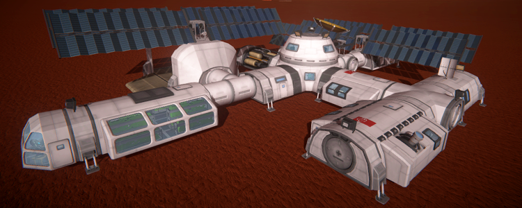

(1.)Who are we:

'Kerbal Interplanetary system',we have been on process of building interplanetary base on another planet for the better future.
We are happy to announce that we have successfully accomplished this project.
We have designed system which are helpful in building bases on planets.This includes greenhouse,cupola habitats and several other.
Also major life-support mods.
(2.) Purpose :
Population and pollution has been drastically increasing on earth.There is no doubt that life on earth
is going to be sustainable in future.This emphasis us to find stable future for humans to live.
Interplanetary base designing is an effort to achieve this goal.
Moreover,resources on earth are also polluted and on verge of completion.
Colonization on other planet will be also adventurous move for the humans. This will allow humans to explore different part of nature.